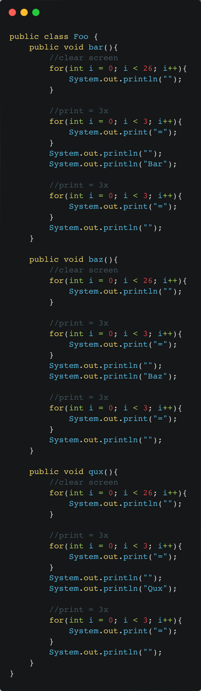
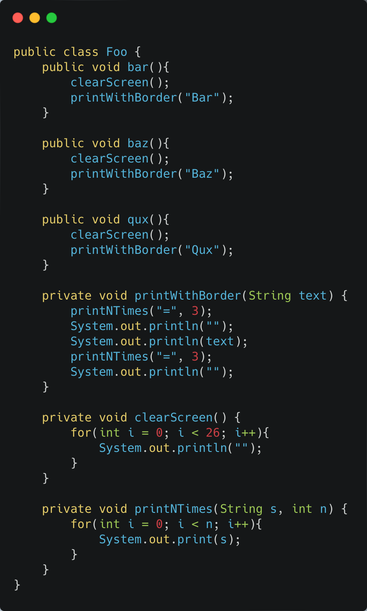

The Dispensable
Duplicate Code
–– Penjelasan Smell
Smell Duplicate Code terjadi ketika terdapat bagian code yang sama atau mirip. Duplikasi biasanya terjadi ketika beberapa programmer mengerjakan bagian berbeda dari program yang sama pada waktu yang bersamaan. Karena mereka mengerjakan tugas yang berbeda, mereka mungkin tidak menyadari bahwa rekan mereka telah menulis kode serupa yang dapat digunakan untuk kebutuhan mereka sendiri. Terkadang duplikasi memiliki tujuan untuk memenuhi tenggat waktu dan kode yang ada “hampir tepat” untuk pekerjaan itu, pemrogram pemula mungkin tidak dapat menahan godaan untuk menyalin dan menempelkan kode yang relevan tanpa memperbaikinya. Satu hal yang bisa menjadi rule of thumb adalah Rule of Three. Bila bagian code sudah di copy-paste tiga kali, ini sudah menjadi lampu merah untuk segera dilakukan refactor.
–– Penyelesaian
Pada contoh kasus di Foo.java terdapat banyak bagian code yang duplikat di method bar, baz, dan qux.
Sehingga dilakukan refactor dengan extract method di banyak tempat. Selain itu, for yang serupa tetapi tidak sama juga diakali dengan cara di-extract namun ditambahi variabel sehingga bisa digunakan di ketiga fungsi tersebut.
Kode setelah direfactor:
